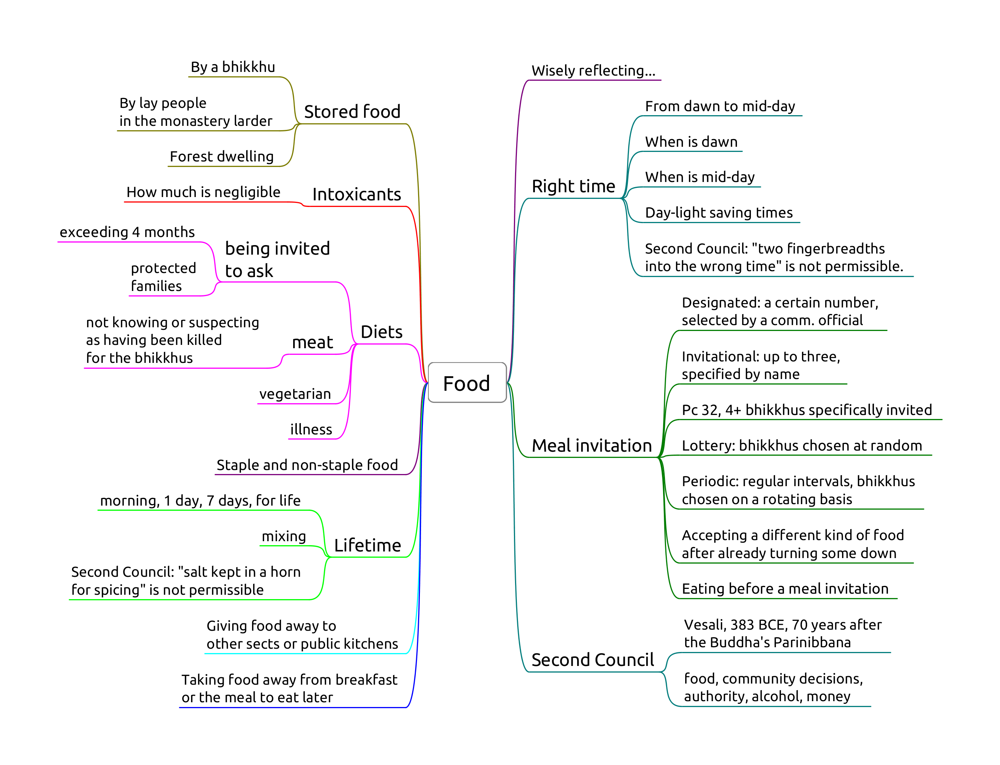

Food 1
- Pc 37, Eating at the wrong time
- Pc 38, Stored food
- Pc 39, Requesting finer staple foods
- Pc 40, Unoffered food
- Pc 51, Intoxicants
- Pd 3, Protected families
- Pd 4, In a forest dwelling

Pc 37, Eating at the wrong time
Eating staple or non-staple food, from mid-day until dawnrise.
Mid-day, or nood, is when the Sun is at zenith. This may be a few minutes ahead or behind of 12:00. It may be around 13:00 during daylight-savings time.
'Eating' is defined as 'entering the mouth'.
Swallowing food disloged from between the teeth, or chewing and swallowing unchewed food passed up from the stomach is not an offence.
Being ill is not an exception, since the 7 day tonics are allowed for that reason.
Pc 38, Stored food
Origin: The Ven. Belatthasisa keeps the leftover rice from his alms-round and moistens it the following day, to stay in solitude. Even though the motivation (frugality) is innocent, the Buddha still rebukes him and recommends going alms-round every day instead.
The convenince of stored food can lead to lack of effort to train and being disconnected from reality.
"In the course of the future there will be bhikkhus who will live entangled with monastery attendants and novices. As they are entangled with monastery attendants and novices, they can be expected to live intent on many kinds of stored-up consumables and on making blatant signs (identifying their) land and crops." (AN 5.80)
'Stored-up' means formally received by any bhikkhu, and keeping it beyond the next dawn.
Relinquishing it to a novice or lay people, who may store and offer it later is allowed. If the bhikkhu hasn't relinquished it, it is not allowable (dukkata).
Perception about the food having been stored-up is not a factor.
Non-offences
- the act of storing it is not an offence, a bhikkhu may carry a lay person's food while travelling
- no offence for telling an unordained person to store it
- a designated food-store is allowed
- no offence for setting food aside and consuming it withing the right period
Pc 39, Requesting finer staple foods
Finer staple foods: ghee, fresh butter, oil, honey, sugar, fish, meat, milk, curds.
Object, effort, result.
Sk 37 covers non-fine staples: "Not being ill, I will not eat rice or bean curry that I have requested for my own sake: a training to be observed."
Hence, dukkata for requesting and consuming other staple foods, except when one is ill.
Non-offenses
Not ill: one is able to fare comfortably without these foods.
- being ill
- was requested for the sake of an ill bhikkhu, and is now left over
- from relatives
- from those who gave invitation to ask
- for the sake of another
- from one's own resources
Pc 40, Unoffered food
Origin: a bhikkhu eat food which was left as dedication to the ancestors in a cemetery. People complained and criticized. "That bhikkhu is strong, perhaps he feeds on human flesh."
Object: whatever is fit to eat.
One may drink water, or use tooth-cleaning sticks without it being offered.
The act of offering is described in the Vibhanga.
- Standing within hand's reach (hatthapasa),
- receiving with the hand,
- with something in contact with the body,
- or the item being dropped and caught.
Effort:
- dukkata for taking the unoffered item
- pacittiya for every mouthful
Perception of the item being offered or not is not a factor.
The allowance to pick up fallen fruit in times of scarcity and famine was later rescinded.
Non-offenses
- make and take an antidote in the case of emergency
- a non-human being may offer the food
Pc 51, Intoxicants
Origin: Ven. Sāgata awes the lay supporters in Kosambi with his psychic power by doing battle with a fire-nāga. The supporters ask the bhikkhus what they could offer or prepare for them. The group of six ask them to prepare liquor. When the supporters see Ven. Sāgata on alms-round, they offer him liquor house after house, and he passes out at the city gate. The Buddha and other bhikkhus see him, and carry him back to the monastery. There, he forgets being deferential to the Buddha and sleeps in a helpless stupor.
Object: any alcoholic beverage.
Alcohol is criticized because it destroys one's sense of shame, weakens one's discernment and can put one into a stupor. Hence this rule is extended to other intoxicants such as narcotics and hallucinogens by the Great Standards.
Perception about whether a liquid counts as alcoholic is not a mitigating factor. For example drinking champagne when thinking it to be carbonated apple juice.
Effort: taking any amount, even as little as the tip of a blade of grass.
Non-offences
- eating food which was cooked using alcohol
- medicine containing a negligible amount of alcohol: the taste, color, and smell of the alcohol are not perceptible
Notes
Kombucha (aka tea fungus) is a mixed culture of yeast and bacteria. The yeast consumes the sugar and produces alcohols which the bacteria turns into acetic and other acids. See also: SCOBY (symbiotic culture of bacteria and yeast).
Effective microorganisms (EM) are blends of common anaerobic microorganisms in a carbohydrate-rich liquid.
Pd 3, Protected families
The purpose is to avoid damaging the faith of those supporters who might suffer financially if they give too much.
Non-offences
- being ill
- invited
- juice, tonics, medicines
- the almsfood is supplied by others
- the family members take turns
- eating the leftovers of another bhikkhu
- the family offers outside their residence
Pd 4, In a forest dwelling
When a bhikkhu is living in a dwelling in a remote and dangerous area, the supporters should send a messenger in person to the bhikkhu when bringing food offerings. He should tell his supporters about the danger of thieves and robbers on the road, and if the supporters decide to come anyway, he should tell the thieves to go away.
The messenger must be a lay person.
Eating unannounced food offerings is to be acknoledgeded as bad conduct.
Non-offences
- being ill and unable to go on alms-round
- allowance for using fruit, roots, etc. growing in the dwelling or its vicinity
- accepting the food outside the dwelling and eating it inside
- accepting and eating juice or 7 day tonics